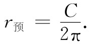

图42-2 球面上的一只昆虫
按照牛顿理论，所有物体都吸引其他物体，吸引力与它们之间距离的平方成反比；物体受力后就产生与力成正比的加速度。这些就是牛顿的万有引力定律和运动定律。如你所知，它们说明了球、行星、人造卫星、星系等等运动的原因。
对于引力定律，爱因斯坦有不同的解释。按照他的理论，空间和时间——必须放在一起称为时空——在重质量物体附近是弯曲的。物体总是力图沿着弯曲时空中的“直线”行进，它们的这种运动方式是弯曲时空造成的。这是一个复杂的概念——非常复杂。这就是本章我们要阐明的概念。
我们的题目含有三个部分。一部分涉及引力效应；另一部分涉及我们已经学过的时空概念；第三部分与弯曲时空概念有关。开始时我们把题目简化，先不考虑引力，且撇开时间——只讨论弯曲空间。稍后，我们会谈到其他部分，但现在我们将把注意力集中在弯曲空间的概念——弯曲空间的含意是什么，更确切地说，爱因斯坦应用弯曲空间的含意是什么。结果发现，即使如此，在三维情况下仍相当困难。所以我们一开始还得把问题做进一步的简化，只讨论二维情况下“弯曲空间”一词的意思是什么。
为了理解二维情况下弯曲空间的概念，你真应该去体验一下生活在这种空间中的角色的特别的观点。假定我们设想一只昆虫，它没有眼睛，生活在一个平面上，如图42-1所示。它只能在平面上行动，而且无法知道有什么发现任何“外部世界”的方法（它没有你们的想象力）。当然，我们将用类推法进行讨论。我们 生活在一个三维的世界，因而不会有任何离开我们的三维世界、在一个新的方向上的想象能力，所以我们只得通过类推的方法把事情想清楚。这如同我们就是一只生活在平面上的昆虫，而在另一方向上存在着空间。这就是为什么我们首先将和昆虫打交道，并记住它必须生活在它的表面上而不能离开的原因。
图42-1 平面上的一只昆虫
作为生活在二维空间中昆虫的另一例子，我们设想有一只昆虫生活在球面上。我们可以想象它在球的表面上到处爬行，如图42-2所示，但它不能“仰视”、“俯视”或“朝外面”观看。
图42-2 球面上的一只昆虫
现在我们还要考虑第三种 生物。它也和前面两个例子一样是一只昆虫，和第一只昆虫那样生活在一个平面上，但这个平面很独特，在不同的地方具有不同的温度。同时，昆虫和它使用的尺全是由相同的材料做成的，当材料被加热时就膨胀。每当它拿一把尺放在某处去测量某物体时，尺就立即膨胀至与该处温度相当的长度。无论它把什么物体——它自身、尺、矩形或任何东西——放在何处，该物体总会因热膨胀而伸展自己。任何物体在热的地方比在冷的地方要长，而任何物体都具有相同的膨胀系数。我们把第三种昆虫的住处称为“热板”，不过，我们特别将它设想为一种特殊类型的热板，它的中心较冷，越走向边缘越热（参见图42-3）。
图42-3 热板上的一只昆虫
现在我们将想象那些昆虫开始研究几何学。虽然我们设想它们是瞎子，不能看见任何外部世界，但它们还能用腿及感觉器官做很多事情。它们可以画出线条，能够制造尺并测量长度。首先，假定它们从最简单的几何概念着手。它们学习如何做一条直线——定义为两点之间最短的联线。第一只昆虫——参见图42-4——学会了做非常好的线。但对于球面上的昆虫来说会发生什么情况呢？它把直线画成两点之间（对它来说）的最短距离，如图42-5所示。对我们来说，它看起来像一条曲线，但是它无法离开球面找出“真正”更短的线。它仅知道，如果在自己的世界中 尝试做别的路径，则这些路径总是比它的直线要长。所以我们将允许它把直线作成两点之间最短的圆弧（当然是大圆的圆弧）。
图42-4 在平面上做直线
图42-5 在球面上做直线
最后，第三只昆虫——图42-3中的那只昆虫——也会画出“直线”，虽然对我们来说它看起来像曲线。例如，图42-6中A和B之间的最短距离应该沿着像图中所示的曲线。为什么呢？因为当线弯向热板的较暖部分时，尺会变得较长（从我们无所不晓的观点来看），因而从A到B不断丈量所取得的“码尺”的次数就较少。所以对它 来说该线是直的——它无法知道在陌生的三维世界中还会有人把别的线称为“直线”。
图42-6 在热板上做直线
我们认为你现在已经得到这样的概念，即其他一切分析将始终是从位于特殊表面上的生物的观点出发，而不是从我们 的观点出发的。考虑到这点，我们来看看它们的其他几何图形像什么样子。我们假定昆虫们都已学会如何使得两条线相交成直角（你可以想象出它们如何才能做到这一点）。因此第一只（在正常平面上的）昆虫发现一个有趣的事实。如果它从A点出发做一条长100in的线，然后作一个直角并标出另一条100in的线，接着做另一个直角，并做另一条100in的直线，然后做第三个直角和第四条100in长的线，最后恰好在出发点结束，如图42-7（a）所示。这个图形成为它所在世界的一个特征——它的“几何学”中的一个事实。
然后，它发现另一件重要的事情，如果它做一个三角形——用三条直线画出的图形，则三个内角之和等于180°，即等于两直角之和，参见图42-7（b）。
图42-7 平直空间中的正方形、三角形和圆
接着，它发明了圆。圆是什么？圆是用这样的方法做成的：你从一点出发，沿着许许多多方向画直线，并将所有到出发点具有相同距离的大量的点连成线，参见图42-7（c）（如何给这些事物下定义，我们应小心从事，因为我们必须能够去为其他伙伴做类似的东西）。当然，通过围绕该点转动一把尺，你也能够做出与此等价的曲线。反正上述昆虫已学会如何去做圆，因此，有一天它想去测量圆周的距离。它测量几个圆周后发现了一个简洁的关系：周长恒等于同一个数目乘以半径r（当然，r是从中心到外面曲线的距离）。周长和半径总是具有相同的比例——近似为6.283——与圆的大小无关。
现在，我们来看看其他昆虫对于它们的 几何学发现了些什么。首先，当球面上的昆虫试图做一个“正方形”时会发生些什么呢？如果按照我们上面给出的规定，它大概会认为所得结果很不值得忧虑。它得到了像图42-8中所示的图形。它的结束点B并不在出发点A上，它根本没有做成一个闭合的图形。你可以弄一个球来试试看，对于热板上的昆虫朋友来说也会出现类似的情况。如果它画出了四根等长的直线——用它膨胀的尺测量的——用直角连接后，它会得到一幅如图42-9所示的图形。
| 图42-8 在球面上试做“正方形” | 图42-9 在热板上试做“正方形” |
现在假定每只昆虫都有它们自己的欧几里得，他曾告诉它们几何图形“应该”像什么样子，而且它们已经通过小尺度 范围所做的粗糙测量对之进行了初步的检验。然后当它们试图在大尺度范围做一个精确的正方形时，就发现有点不对。要害在于，仅通过几何学的测量 就会发现它们的空间有些问题。我们定义的弯曲空间，就是其中的几何图形不是我们在平面情况下所期望的形状的那种空间。昆虫在球面或热板上所做的几何图形就是弯曲空间的几何图形。那里欧几里得几何学的规则失效了。为了查明你所生活的世界是弯曲的，没有必要得使自己离开这个平面；为了弄清楚你生活的面是一个球面，没有必要去环绕这个球飞行。通过丈量一个正方形，你就可以发现你生活在一个球上面。如果正方形很小，则将需要很高的精度；若正方形很大，那测量工作可以做得粗一点。
让我们考虑平面上的三角形，内角之和等于180°。我们在球面上的朋友可能发现一些很特殊的三角形。例如它可能发现具有三个直角 的三角形。的确是的！其中之一如图42-10所示。假定昆虫从北极出发，做一条直线直达赤道，然后做一个直角以及同样长度的另一条直线。接着它再做一遍。根据它所选取的很特殊的长度，它正好回到出发点，和第一条直线相遇，并与其构成直角。所以，对它来讲，毫无疑问这个三角形具有三个直角，即它们之和为270°。结果表明，对它而言，三角形三内角之和恒大于180°。事实上，超过部分（对于上述特殊情况，超过90°）正比于三角形有多大的面积。如果球面上的一个三角形很小，则它的角相加就非常接近180°，仅稍微超过一点。当三角形变得较大时，这种差异就会上升。在热板上的昆虫会发现它们的三角形具有类似的困难。
| 图42-10 在球面上一个“三角形”可以具有三个90°的角 | 图42-11 在球面上做圆 |
接下来我们考察关于圆其他昆虫发现了什么。它们做一些圆并测量它们的周长。例如，在球面上的昆虫或许会做出如图42-11所示的那个圆，而且它会发现该圆的周长小于2π乘以半径（你可能知道，从我们的三维观点来看，这是很明显的，即它所谓的“半径”是弯曲的，比该圆的真实半径要长 ）。假定球面上的昆虫已经学过欧几里得几何，并决定预言半径等于周长除以2π，取作
 （42.1）
因此它会发现所测得的半径比预言的半径要大。若继续讨论这个题目，那它或许会把这个差定义为“逾半径”，并写成
r测 -r预 =r逾 ， （42.2）
并且研究逾半径效应如何取决于圆的大小。
在热板上的昆虫会发现类似的现象。假定它以板上的冷点为圆心画圆，如图42-12所示。要是我们看着它做圆，则会注意到它的尺在靠近圆心时较短，而当尺移动到外面时就变长——虽然昆虫并不知道，这也是显然的事。当它测量周长时，尺始终是长的，所以它也发现测得的半径较预期半径C/2π要长。因此，热板上的昆虫也发现了“逾半径效应”，该效应的大小又决定于圆的半径。
图42-12 在热板上做圆
我们将把“弯曲空间”定义 为其中会发生下述类型几何偏差的空间：三角形三内角之和不等于180°；圆的周长除以2π不等于半径；制作正方形的规则不会给出闭合的曲线。你可能还会想到一些别的偏差。
我们已经给出了两个关于弯曲空间的不同例子：球面和热板。但有趣的是，如果选取正确的温度随热板上距离变化的函数，则这两种几何 将是完全相同的。这事相当有趣，我们可以使得热板上的昆虫和球面上的昆虫获得完全相同的答案。对于那些爱好几何学和几何学习题的人，我们将告诉你们如何才能做到这一点。如果设想尺的长度（由温度确定）与1加上某个常数乘上距原点距离的平方成正比，那么你将发现热板上的几何在所有细节上 [1] 均与球面上的几何完全相同。
当然，还有其他类型的几何学。你们可能会问，那生活在梨上面的昆虫，也就是生活在有的地方弯曲得比较厉害、有的地方弯曲得比较平坦的曲面上的昆虫，其几何将如何。这时，昆虫在它的世界中的一部分所做的小三角形，其角的逾量比在另一部分所做的小三角形要大。换句话说，空间的曲率是可以逐处变化的，这就是对上述概念的概括。这种情况也可以通过热板上适当的温度分布来进行模仿。
我们也不妨指出，上述结果可以从类似矛盾的、相反的东西中得出来。例如，你们可能会发现，当把三角形做得太大时三内角之和小于 180°。这话也许听起来不大可能，但一点也不假。首先，我们该有一块热板，它的温度随距中心的距离而降低，于是所有的效应都会反转过来。但是我们也可以通过考虑二维的鞍面几何图形而纯粹从几何学上做到这点。想象如图42-13所示意的马鞍型曲面，现在在该曲面上画一个“圆”，把它定义为距中心相同距离的所有点的轨迹。这个圆是一条像扇贝壳那样上、下波动的曲线，所以它的周长比根据2πr所预期的值要长。这时的C/（2π）就大于r [2] ，“逾半径”应为负值。
图42-13 马鞍型曲面上的圆
球、梨等这类物体全都具有正 曲率的表面；另一类物体则称为具有负曲率的表面。一般说来，一个二维世界的曲率将是逐处变化的，在某个地方为正，而在另一个地方为负。通常，我们所谓的弯曲空间，仅是指其中欧几里得几何规则因一个偏差符号或其他原因而失效的空间，曲率的量值——比如说由逾半径所定义——可以逐处变化。
图42-14 具有零内曲率的二维空间
我们应该指出，根据上面对曲率的定义，圆柱面是不弯曲的，这令人相当奇怪。如果一只昆虫生活在一个圆柱面上，如图所示，则它会发现三角形、正方形以及圆所具有的一切特征，与它们在平面上所具有的特征完全相同。只要设想一下，如果将圆柱面展开成一个平面，那么所有这些图形看起来将是什么样子，就不难明白这一点。因此，所有的几何图形都能够画得与它们在平面上的图形完全对应起来。所以对生活在圆柱面上的昆虫来说（设想它不会绕圆柱兜一圈，而只会做局部测量），它一点也发现不了它所在空间是弯曲的。从我们的学术意义上来说，我们认为它的空间并不是弯曲的。我们要谈的曲率，更精确地应称为内（禀） 曲率，这是一种只能通过局部区域的测量而得出的曲率［圆柱面没有内（禀）曲率］。这是爱因斯坦所指定的意思，每当他说我们的空间是弯曲的时候，指的就是这个意思。但到目前为止，我们只定义了二维情况下的弯曲空间，我们必须继续去弄清楚在三维情况下这个概念会意味着什么。